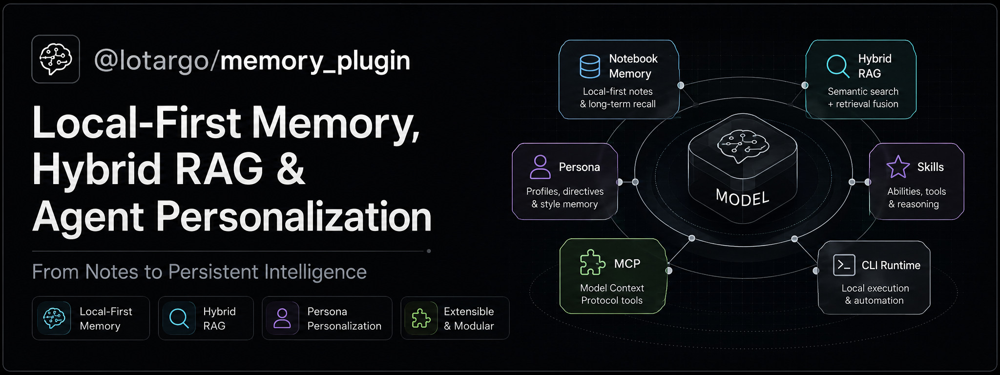
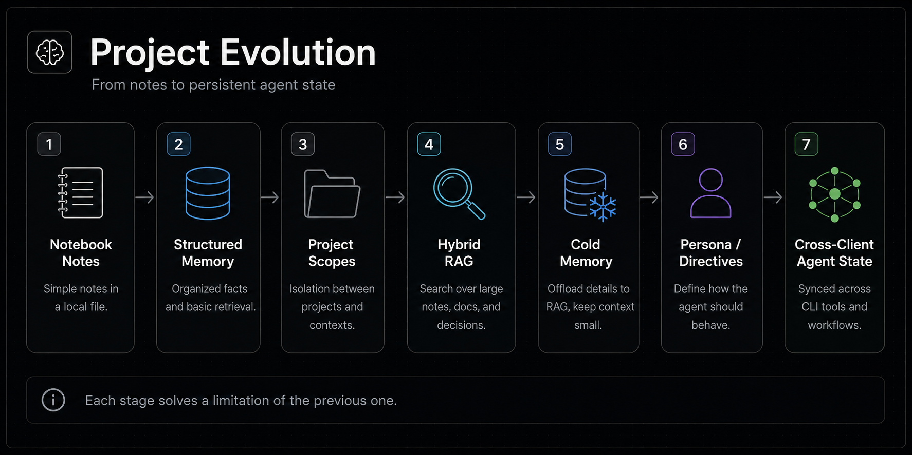
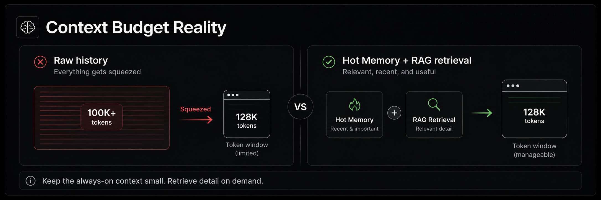
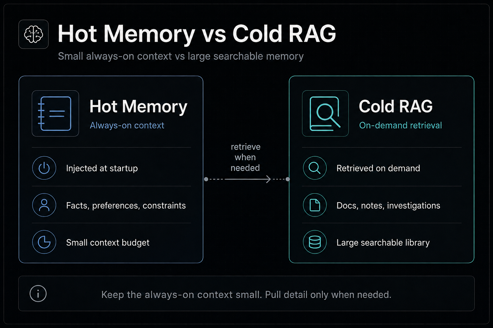
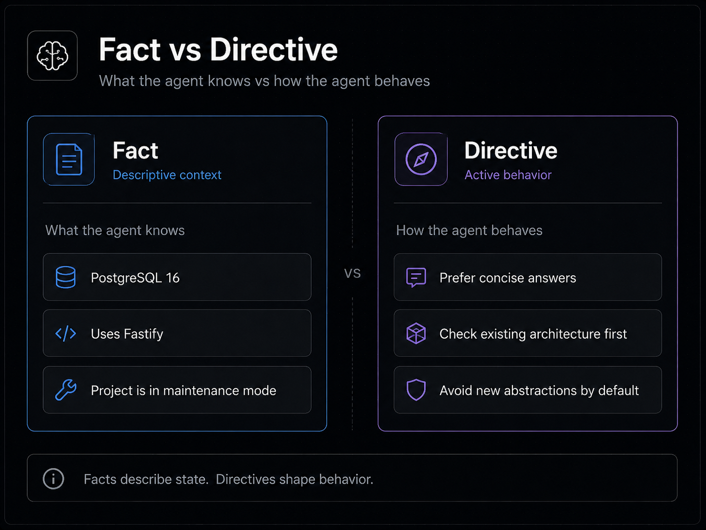
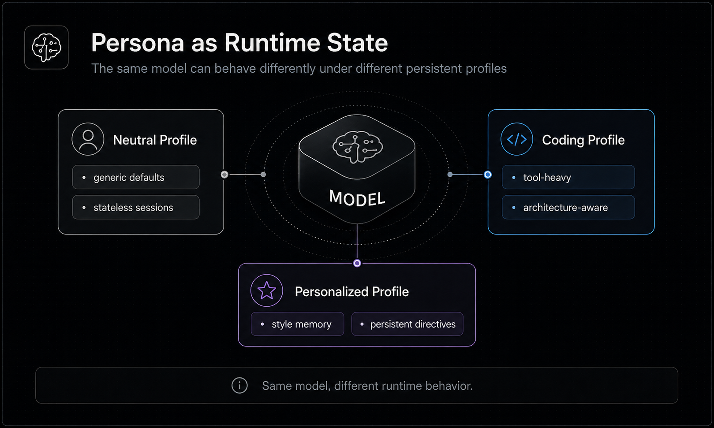
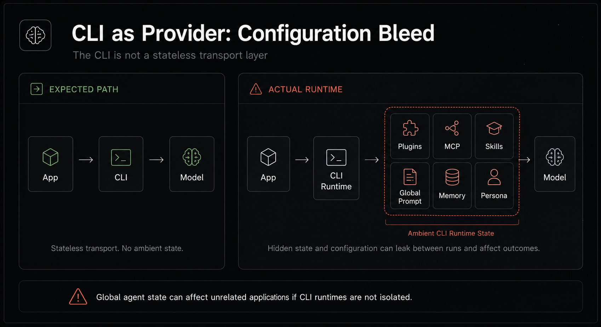
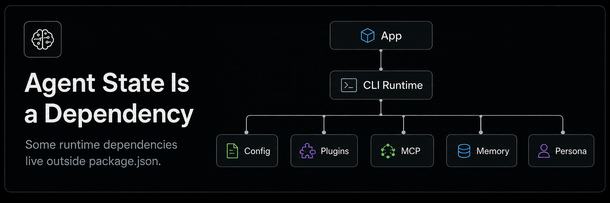
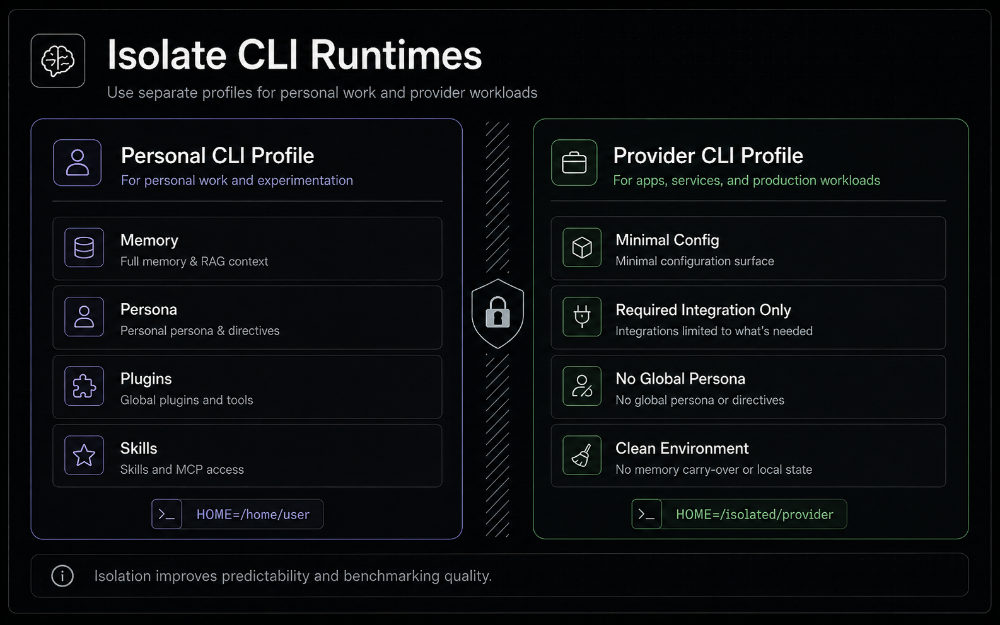

When Agent Memory Becomes Runtime State: RAG, Persona, and Hidden Dependencies
Long-term memory for an AI agent stops being a list of saved facts surprisingly quickly. A small notebook is enough at first; then search appears, memory has to be separated by project, and eventually persistent instructions start changing not what the model knows, but how it behaves. At that point memory becomes part of the agent's runtime state — bringing new problems around isolation, reproducibility, and hidden dependencies along with the convenience.

This article grew out of building @lotargo/memory_plugin, but it is not a feature tour. The more interesting path is the architectural transition itself: notes → memory → RAG → persona → persistent agent state — and what changes once an agent genuinely remembers across sessions.
Memory is not chat history
The simplest long-term memory implementation is almost trivial: a text file where the user or agent keeps short notes.
Project uses PostgreSQL.
Prefer concise answers.
Do not introduce abstractions without a concrete need.
At small scale this works extremely well. The records are human-readable, versionable, and cheap to maintain. The problem begins precisely when the memory becomes useful: useful records accumulate.
If every new session starts with the complete archive, long-term memory slowly turns into another way to saturate the context window. The fact that a model can technically accept a large context does not mean it should receive everything you know on every call.

In memory_plugin, the path was incremental. A Notebook of short facts came first. Structured records and project scopes followed. Then detailed material needed retrieval. After that it became clear that descriptive facts and behavioral instructions should not be treated as the same kind of memory. The fact / directive distinction led naturally to persona as persistent cross-client state.
Each layer solved a limitation of the previous one rather than replacing it.
Context budget: storing everything is not the same as sending everything
Two resources are often conflated: the size of long-term storage and the size of the model's active context.
The first can be effectively huge. The second is always finite, even when context windows are measured in hundreds of thousands of tokens. And this is not merely a token-price problem. A large noisy context makes it harder to distinguish the details that actually matter.

A useful memory architecture therefore optimizes not for maximum prompt injection, but for maximum availability with minimum active context.
store broadly
↓
keep high-signal state small
↓
retrieve relevant detail on demand
↓
expand the full source only when needed
That leads to the hot/cold split.
Hot memory and Cold RAG
Hot memory is the small set of information worth keeping close almost all the time: architectural constraints, preferences, active agreements, stable user facts.
Cold memory contains decisions, investigations, long notes, handoffs, documents, reports, and experiment history. It should remain accessible without living in every prompt.

In practice these become different interfaces for the agent. In memory_plugin, a concise statement can live in the Notebook while a detailed investigation becomes a RAG Memory Note. Document retrieval combines SQLite FTS5/BM25 with local dense embeddings, and results can be discovered as a compact index, used as snippets, or expanded to the complete source.
The specific ranking algorithm is secondary to the contract:
Memory should be large. Active context should stay small.
The agent's workflow changes accordingly. Instead of “remember everything,” it becomes: find the right source, verify its identity, then expand only the fragment or document needed now.
Memory needs to know which project it belongs to
The next problem appears as soon as one agent is used across several repositories.
Suppose project A uses FastAPI and project B uses Django. If both are just records in one global notebook, the model has little structural reason not to carry a decision from one project into the other.
Long-term memory therefore needs not only retrieval, but scope.
global
├── user preferences
└── reusable knowledge
project A
├── architecture
├── decisions
└── investigations
project B
├── architecture
├── decisions
└── investigations
My implementation makes Git identity — primarily the normalized remote — more important than the absolute filesystem path. A repository can move to a different directory or machine and still resolve to the same logical memory.
This suggests an important rule: all should not mean “everything this agent has ever seen.” For a working agent, a safer interpretation is “global + current project.” Other projects should remain outside the retrieval boundary.
Fact and Directive: knowledge and behavior are different things
Up to this point memory can still be described as a knowledge base. Then a record like this appears:
Prefer concise answers and challenge unnecessary abstractions.
That is not a fact about the world or the project. It is an instruction the agent should actively apply.

The distinction is structural:
| Type | Question | Example |
|---|---|---|
fact |
What does the agent know? | “The project uses PostgreSQL 16” |
directive |
How should the agent act? | “Inspect the existing architecture before adding abstractions” |
Both can share physical storage, but semantically merging them is dangerous. A fact should help the model interpret the task. A directive should become part of active configuration.
This is the point where ordinary persistent memory quietly becomes personalization.
Persona is runtime state
The word persona is often reduced to cosmetics: “be friendly,” “talk like a pirate,” “use emoji.” That definition is too narrow for working agents.
Persistent directives can influence:
- degree of autonomy;
- preferred architectural style;
- explanation format;
- willingness to challenge assumptions;
- attitude toward risky changes;
- tool-use conventions;
- level of initiative;
- the communication pattern expected by a specific user.

The model weights did not change. The provider did not change. The model version did not change. Yet the working behavior did.
That makes persona more useful to think of as runtime state than as a UI preference:
output = f(model, prompt, tools, retrieved knowledge, persistent directives)
Removing the final argument can change the result as noticeably as changing the tool set or the system prompt.
This leads to the central distinction:
RAG answers what the agent knows. Persona shapes how it uses that knowledge.
How strongly can persistent directives affect behavior?
In practice the effect can be stronger than expected from a one-off system prompt. There is no mystery involved: a persistent instruction repeatedly becomes part of the agent's working norm and therefore shapes how later requests are interpreted.
Directives can influence how readily a model:
- asks for clarification instead of acting;
- selects a conservative strategy;
- challenges a user's assumption;
- chooses a cautious or refusal-oriented interpretation of an ambiguous request;
- continues an established working style without having the rules explained again.
This observation needs careful wording. Persistent persona does not rewrite model weights and does not remove built-in safety mechanisms. Higher-priority platform and safety instructions remain authoritative. Persistent context can, however, affect how ambiguous cases are interpreted and which of several allowed response strategies the model selects. The effect is simply easier to observe in models whose behavioral constraints are less rigidly expressed.
That is exactly why persistent personalization deserves the same engineering attention as other runtime components.
Persistent persona has its own failure modes
Once an instruction survives a session, a mistake can survive the session too.
Possible failures include:
- a preference that is no longer current;
- conflicting directives;
- an accidental habit promoted into a durable rule;
- an excessively aggressive or cautious persona;
- an incorrect fact that continues influencing decisions;
- instruction poisoning through uncontrolled writes to long-term memory.
Persistent state therefore needs a lifecycle: stable identifiers, updates, superseding, deletion, scopes, and some way to explain why a particular instruction is active now.
“An agent that remembers everything” sounds attractive until it becomes very good at remembering what should have been forgotten.
CLI as provider: the hidden runtime layer
Another problem became much easier to see once persistent persona existed.
Tools such as OpenCode or Codex are not always used interactively. A developer can place a CLI between an application and the LLM and use it as a ready-made provider/runtime layer: the CLI already handles accounts, models, tools, and agent execution.
The mental model is often:
Application → CLI → Model
The real path can be much longer.

Application
↓
CLI runtime
├── global config
├── plugins
├── MCP servers
├── skills
├── prompts
├── memory
└── persona
↓
Model
When the CLI runs inside the user's normal environment, all of this becomes ambient agent state: state that the application never declared directly but that still influences the output.
I think of the resulting effect as Configuration Bleed in CLI-as-Provider Architectures.
memory_plugin does not create this class of problem. It merely makes it easy to observe because memory and persona have visible behavioral effects. A global MCP server, skill, or user prompt can leak into the same runtime in exactly the same way.
Agent state is a dependency even when it is absent from the lockfile
The application's visible dependency tree may look harmless:
App
└── CLI runtime
The execution dependency tree is different.

The uncomfortable part is that those dependencies may not appear in:
package.json;requirements.txt;- a lockfile;
- the Dockerfile;
- application source code.
A global plugin update or persona change can alter the behavior of an application that never imports that plugin.
From a reproducibility perspective, this is a real hidden dependency.
Ambient state contaminates benchmarks
Consider a simple benchmark:
Model A vs Model B
If Model A is reached through a CLI with accumulated memory, coding skills, and persona while Model B runs in a clean profile, the actual comparison is:
Model A + Agent State A
vs
Model B + Agent State B
It is easy to attribute the result to the model even though part of the advantage came from the environment.
Serious comparisons therefore benefit from a clean-profile baseline: a separate HOME/config directory, a fixed tool set, no personal memory, and every instruction explicitly recorded. Persistent state can then be added as its own experimental variable.
Otherwise the benchmark measures not just the model, but the life history of the CLI used to reach it.
Production isolation: personal agent and provider are different environments
If a CLI becomes part of an application, it should get its own runtime profile.

A minimal split can look like this:
Personal CLI
HOME=/home/user
memory
persona
skills
plugins
Provider CLI
HOME=/isolated/provider
minimal config
required integration only
no personal memory
no global persona
Practical isolation options are familiar:
- separate
HOMEor config directory; - separate CLI profile;
- separate system user;
- container;
- explicitly disabled global plugins, MCP servers, and skills;
- a minimal fixed environment for tests and production.
The broader point is to treat agent state with roughly the same care already given to credentials and environment variables. Personalization is not a defect — it is what gives the agent continuity. But continuity without boundaries becomes implicit coupling.
From a stateless model to a persistent working environment
Long-term memory ultimately changes what we mean by “the agent.”
A stateless approximation is:
agent ≈ model + prompt + tools
A persistent system is closer to:
agent ≈ model
+ tools
+ hot memory
+ retrievable knowledge
+ project scope
+ persona/directives
+ runtime configuration
The conclusion I keep coming back to is simple:
Memory provides continuity of knowledge. RAG provides selective access to that knowledge. Persona provides continuity of behavior. Isolation defines where that behavior is allowed to apply.
That is the point where “LLM memory” stops being a convenient notebook and becomes part of runtime architecture.
@lotargo/memory_plugin is one practical implementation of this idea: a local-first Notebook, hybrid RAG, project scopes, and persistent persona across multiple AI coding clients. But the principle is broader than any one project. As agent systems acquire more durable state, we can no longer afford to treat that state as an invisible UI preference.
Когда память агента становится частью runtime: RAG, persona и скрытые зависимости
Долговременная память AI-агента очень быстро перестаёт быть просто списком сохранённых фактов. Сначала достаточно небольшого блокнота, затем появляется поиск, потом разделение памяти по проектам, а после — постоянные инструкции, которые меняют уже не знания модели, а её поведение. В этот момент память становится частью runtime-состояния агента — и вместе с удобством появляются новые проблемы изоляции, воспроизводимости и скрытых зависимостей.
Эта статья выросла из разработки @lotargo/memory_plugin, но речь здесь не о перечне функций конкретного плагина. Интереснее проследить сам переход: заметки → память → RAG → persona → persistent agent state — и посмотреть, что меняется в архитектуре, когда агент действительно начинает что-то помнить между сессиями.
Память — не история чата
Самая простая реализация долговременной памяти выглядит почти смешно: текстовый файл, в который агент или пользователь добавляет короткие заметки.
Project uses PostgreSQL.
Prefer concise answers.
Do not introduce abstractions without a concrete need.
На небольшом объёме это работает отлично. Такие записи понятны человеку, легко версионируются и практически ничего не стоят в обслуживании. Проблема начинается не тогда, когда памяти мало, а когда она становится полезной: полезные записи накапливаются.
Если каждую новую сессию начинать с полного архива, долговременная память постепенно превращается в ещё один способ забить контекстное окно. Сам факт, что модель технически может принять большой контекст, не означает, что ей стоит каждый раз отправлять всё известное.
В memory_plugin путь оказался довольно естественным. Сначала появился Notebook с короткими фактами. Затем потребовались структурированные записи и project scopes. Потом — поиск по подробным материалам. После этого стало очевидно, что описательные факты и поведенческие инструкции нельзя считать одним и тем же типом памяти. Так возникло разделение fact и directive, а вместе с ним — persona как постоянное состояние между клиентами.
Каждый следующий слой не отменял предыдущий. Он решал его ограничение.
Context budget: хранить много не значит отправлять всё
Есть два разных ресурса, которые часто смешивают: объём долговременного хранилища и объём активного контекста модели.
Первый может быть практически неограниченным. Второй всегда конечен — даже если окно измеряется сотнями тысяч токенов. Более того, проблема не сводится к цене токенов. Большой шумный контекст усложняет выбор действительно важных деталей.
Поэтому полезная архитектура памяти обычно стремится не к максимальному prompt injection, а к максимальной доступности при минимальном активном контексте.
store broadly
↓
keep high-signal state small
↓
retrieve relevant detail on demand
↓
expand the full source only when needed
Отсюда появляется разделение на горячую и холодную память.
Hot memory и Cold RAG
Hot memory — это то, что действительно полезно иметь рядом почти всегда: несколько архитектурных ограничений, предпочтений, текущих договорённостей, устойчивых пользовательских фактов.
Cold memory — решения, исследования, длинные заметки, handoff-записи, документы, отчёты и история экспериментов. Она должна быть доступна, но не обязана жить в каждом prompt.
Практически это даёт два разных интерфейса мышления агента. В memory_plugin короткая запись может жить в Notebook, а подробное исследование — как RAG Memory Note. Для документов retrieval объединяет SQLite FTS5/BM25 и локальные dense embeddings, после чего результаты можно получить как компактный индекс, snippets или раскрыть целиком.
Но конкретный поисковый алгоритм здесь вторичен. Важнее сам контракт:
Память обязана быть большой. Активный контекст обязан оставаться маленьким.
Это меняет и способ работы агента. Вместо «вспомни всё» появляется последовательность: найти подходящий источник, проверить его идентичность, а затем раскрыть ровно тот фрагмент или документ, который нужен сейчас.
Память должна знать, к какому проекту она относится
Следующая проблема возникает, как только одним агентом пользуются в нескольких репозиториях.
Допустим, в проекте A принято использовать FastAPI, а в проекте B — Django. Если это просто две записи в глобальном блокноте, у модели нет надёжной причины не перенести решение из одного проекта в другой.
Поэтому долговременная память нуждается не только в retrieval, но и в scope.
global
├── user preferences
└── reusable knowledge
project A
├── architecture
├── decisions
└── investigations
project B
├── architecture
├── decisions
└── investigations
В моей реализации project identity привязан прежде всего к Git remote, а не к абсолютному пути на диске. Это позволяет переместить репозиторий, открыть его из другой директории или на другой машине и всё равно получить ту же логическую память.
Здесь появляется важный принцип: all не должно означать «всё, что когда-либо видел агент». Для рабочего агента безопаснее трактовать его как «global + current project». Остальные проекты должны оставаться за границей retrieval.
Fact и Directive — знания и поведение не одно и то же
До определённого момента память можно считать базой знаний. Но затем появляется запись вроде:
Prefer concise answers and challenge unnecessary abstractions.
Это уже не факт о мире и не факт о проекте. Это инструкция, которую агент должен активно применять.
Разница принципиальна:
| Тип | Вопрос | Пример |
|---|---|---|
fact |
Что агент знает? | «Проект использует PostgreSQL 16» |
directive |
Как агент должен действовать? | «Сначала проверяй существующую архитектуру и только потом добавляй абстракции» |
Можно хранить оба типа в одном физическом хранилище, но семантически смешивать их опасно. Факт должен помогать модели интерпретировать задачу. Directive должен становиться частью её активной конфигурации.
Так обычная persistent memory незаметно превращается в механизм персонализации.
Persona — это runtime state
Слово persona часто ассоциируется с чем-то косметическим: «будь дружелюбным», «говори как пират», «используй эмодзи». Для рабочих агентов это слишком узкое представление.
Долговременные directives могут задавать:
- степень автономности;
- предпочтительный стиль архитектуры;
- формат объяснений;
- склонность перепроверять предположения;
- отношение к рискованным изменениям;
- правила использования инструментов;
- уровень инициативы;
- привычный формат общения с конкретным пользователем.
Вес модели не изменился. Provider не изменился. Версия модели не изменилась. Но её рабочее поведение стало другим.
Поэтому мне кажется полезнее считать такую persona не UI-настройкой, а runtime state:
output = f(model, prompt, tools, retrieved knowledge, persistent directives)
Если убрать последний аргумент, результат может измениться так же заметно, как после смены набора инструментов или системного prompt.
Отсюда и ключевое различие всей архитектуры:
RAG отвечает на вопрос «что агент знает». Persona определяет, как он использует это знание.
Насколько сильно persistent directives меняют модель
На практике эффект бывает сильнее, чем ожидаешь от обычного одноразового system prompt. Причина не мистическая: постоянная инструкция присутствует в рабочей норме агента снова и снова и формирует устойчивый контекст интерпретации запросов.
Например, directives могут заметно менять то, насколько охотно модель:
- задаёт уточняющие вопросы вместо действия;
- выбирает консервативную стратегию;
- спорит с предположением пользователя;
- предпочитает отказ или осторожную интерпретацию неоднозначного запроса;
- продолжает уже установленный стиль работы без повторного объяснения правил.
Это наблюдение важно сформулировать аккуратно. Persistent persona не переписывает веса модели и не удаляет встроенные safety-механизмы. Более приоритетные инструкции платформы и ограничения безопасности остаются авторитетными. Но долговременный контекст способен влиять на трактовку неоднозначных случаев и на выбор между несколькими допустимыми стратегиями ответа. На моделях с менее жёстко выраженным поведенческим контуром этот эффект просто заметнее.
Именно поэтому persistent personalization заслуживает того же инженерного внимания, что и остальные части runtime.
У постоянной persona есть собственные failure modes
Как только инструкция переживает одну сессию, ошибка тоже начинает переживать одну сессию.
Можно получить:
- устаревшее предпочтение, которое давно перестало быть актуальным;
- конфликт двух directives;
- случайную привычку, превращённую в постоянное правило;
- чрезмерно агрессивную или осторожную persona;
- неверный факт, который продолжает влиять на решения;
- instruction poisoning через неконтролируемую запись в долговременную память.
Поэтому persistent state должен иметь жизненный цикл: идентификаторы, обновление, superseding, удаление, scopes и возможность понять, почему конкретная инструкция сейчас активна.
Фраза «агент всё помнит» звучит привлекательно до тех пор, пока он не начинает идеально помнить то, что уже стоило забыть.
CLI как provider: скрытая часть runtime
Есть ещё одна проблема, которая стала заметна именно после появления постоянной persona.
CLI-инструменты вроде OpenCode или Codex иногда используют не только интерактивно. Их можно поставить между собственным приложением и LLM как готовый provider/runtime слой: CLI уже умеет работать с аккаунтом, моделями, инструментами и агентным циклом.
Мысленная схема при этом часто выглядит так:
Application → CLI → Model
Но реальная схема может быть значительно длиннее.
Application
↓
CLI runtime
├── global config
├── plugins
├── MCP servers
├── skills
├── prompts
├── memory
└── persona
↓
Model
Если CLI запускается из обычного пользовательского окружения, всё это становится ambient agent state — состоянием, которое приложение напрямую не объявляло, но которое всё равно влияет на его результат.
Я называю этот эффект Configuration Bleed in CLI-as-Provider Architectures.
Важно: memory_plugin не создаёт эту проблему. Он лишь делает её особенно хорошо видимой, потому что memory/persona обладают заметным поведенческим эффектом. Точно так же в runtime могут протечь глобальный MCP-сервер, skill или пользовательский prompt.
Agent state — это dependency, даже если его нет в lockfile
Обычное дерево зависимостей приложения может выглядеть безобидно:
App
└── CLI runtime
А фактическое дерево исполнения оказывается другим.
Особенно неприятно то, что такие зависимости могут отсутствовать в:
package.json;requirements.txt;- lockfile;
- Dockerfile;
- исходном коде приложения.
Обновление глобального plugin или изменение persona способно изменить поведение приложения, которое этот plugin никогда не импортировало.
С точки зрения воспроизводимости это полноценная скрытая dependency.
Как ambient state загрязняет benchmarks
Представим простой benchmark двух моделей.
Model A vs Model B
Если Model A запускается через CLI с накопленной memory, coding skills и persona, а Model B — в чистом окружении, сравнение на самом деле выглядит так:
Model A + Agent State A
vs
Model B + Agent State B
Результат можно ошибочно приписать модели, хотя часть преимущества дала среда.
Поэтому для серьёзных сравнений полезен clean-profile baseline: отдельный HOME/config, фиксированный набор инструментов, отсутствие пользовательской памяти и явная фиксация всех инструкций. После этого persistent state можно добавлять как самостоятельную экспериментальную переменную.
Иначе benchmark измеряет не только модель, но и историю жизни того CLI, через который её запустили.
Production isolation: персональный агент и provider — это разные среды
Если CLI используется как часть приложения, ему нужен собственный runtime profile.
Минимальная модель может выглядеть так:
Personal CLI
HOME=/home/user
memory
persona
skills
plugins
Provider CLI
HOME=/isolated/provider
minimal config
required integration only
no personal memory
no global persona
Практические варианты изоляции просты:
- отдельный
HOMEили config directory; - отдельный CLI profile;
- отдельный системный пользователь;
- контейнер;
- явное отключение глобальных plugins, MCP и skills;
- минимальный фиксированный environment для тестов и production.
Здесь полезно относиться к agent state примерно так же, как мы уже относимся к credentials и environment variables. Персонализация сама по себе не плоха — наоборот, именно она делает агента последовательным между сессиями. Но последовательность без границ легко превращается в неявную связанность.
От stateless model к persistent working environment
В итоге долговременная память меняет сам объект, который мы считаем «агентом».
Если раньше это можно было представить как:
agent ≈ model + prompt + tools
то persistent система ближе к:
agent ≈ model
+ tools
+ hot memory
+ retrievable knowledge
+ project scope
+ persona/directives
+ runtime configuration
Главный вывод для меня оказался простым:
Memory даёт непрерывность знания. RAG даёт выборочный доступ к этому знанию. Persona даёт непрерывность поведения. Isolation определяет границы, внутри которых это поведение имеет право существовать.
Именно после этой точки «память для LLM» перестаёт быть удобным блокнотом и становится частью архитектуры среды выполнения.
@lotargo/memory_plugin — одна практическая реализация этой идеи: local-first Notebook, hybrid RAG, project scopes и persistent persona для нескольких AI coding clients. Но сам принцип шире конкретного проекта. Чем больше агентные системы получают долговременного состояния, тем меньше мы можем позволить себе считать это состояние невидимой настройкой интерфейса.